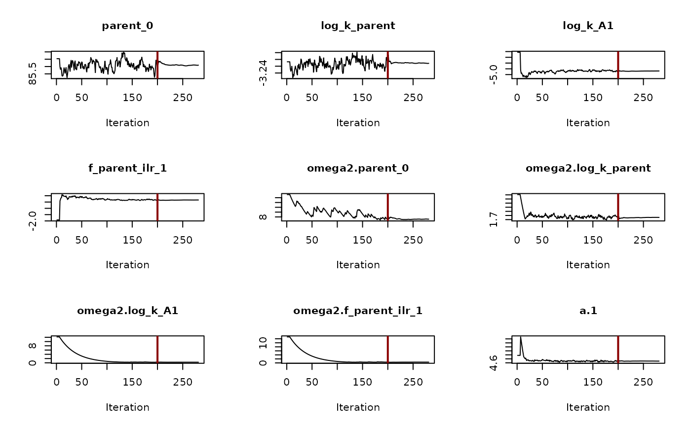
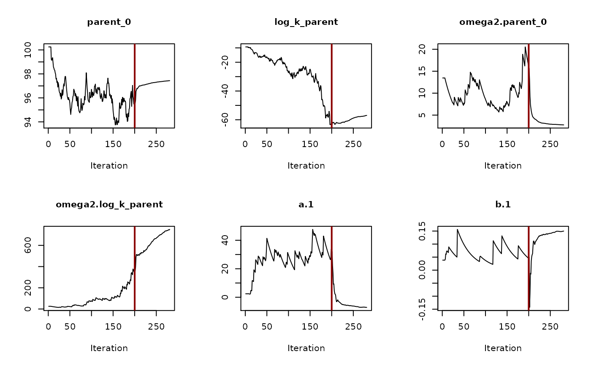

This function sets up a nonlinear mixed effects model for an mmkin row object for use with the saemix package. An mmkin row object is essentially a list of mkinfit objects that have been obtained by fitting the same model to a list of datasets.
saemix_model(object, cores = 1) saemix_data(object, ...)
| object | An mmkin row object containing several fits of the same model to different datasets |
|---|---|
| cores | The number of cores to be used for multicore processing using
|
| ... | Further parameters passed to saemix::saemixData |
An saemix::SaemixModel object.
An saemix::SaemixData object.
Starting values for the fixed effects (population mean parameters, argument psi0 of
saemix::saemixModel() are the mean values of the parameters found using
mmkin. Starting variances of the random effects (argument omega.init) are the
variances of the deviations of the parameters from these mean values.
#> #>ds <- lapply(experimental_data_for_UBA_2019[6:10], function(x) subset(x$data[c("name", "time", "value")])) names(ds) <- paste("Dataset", 6:10) f_mmkin_parent_p0_fixed <- mmkin("FOMC", ds, cores = 1, state.ini = c(parent = 100), fixed_initials = "parent", quiet = TRUE) m_saemix_p0_fixed <- saemix_model(f_mmkin_parent_p0_fixed["FOMC", ])#> #> #> The following SaemixModel object was successfully created: #> #> Nonlinear mixed-effects model #> Model function: Mixed model generated from mmkin object Model type: structural #> function (psi, id, xidep) #> { #> odeini_fixed/(xidep[, "time"]/exp(psi[id, 2]) + 1)^exp(psi[id, #> 1]) #> } #> <bytecode: 0x5555599945b8> #> <environment: 0x555559984388> #> Nb of parameters: 2 #> parameter names: log_alpha log_beta #> distribution: #> Parameter Distribution Estimated #> [1,] log_alpha normal Estimated #> [2,] log_beta normal Estimated #> Variance-covariance matrix: #> log_alpha log_beta #> log_alpha 1 0 #> log_beta 0 1 #> Error model: constant , initial values: a.1=2.95893806804889 #> No covariate in the model. #> Initial values #> log_alpha log_beta #> Pop.CondInit -0.347996 1.66788d_saemix_parent <- saemix_data(f_mmkin_parent_p0_fixed)#> #> #> The following SaemixData object was successfully created: #> #> Object of class SaemixData #> longitudinal data for use with the SAEM algorithm #> Dataset ds_saemix #> Structured data: value ~ time + name | ds #> X variable for graphs: time ()saemix_options <- list(seed = 123456, displayProgress = FALSE, save = FALSE, save.graphs = FALSE, nbiter.saemix = c(200, 80)) f_saemix_p0_fixed <- saemix(m_saemix_p0_fixed, d_saemix_parent, saemix_options)#> Running main SAEM algorithm #> [1] "Thu Nov 5 23:53:29 2020" #> .. #> Minimisation finished #> [1] "Thu Nov 5 23:53:30 2020"#> Nonlinear mixed-effects model fit by the SAEM algorithm #> ----------------------------------- #> ---- Data ---- #> ----------------------------------- #> Object of class SaemixData #> longitudinal data for use with the SAEM algorithm #> Dataset ds_saemix #> Structured data: value ~ time + name | ds #> X variable for graphs: time () #> Dataset characteristics: #> number of subjects: 5 #> number of observations: 90 #> average/min/max nb obs: 18.00 / 16 / 20 #> First 10 lines of data: #> ds time name value mdv cens occ ytype #> 1 Dataset 6 0 parent 97.2 0 0 1 1 #> 2 Dataset 6 0 parent 96.4 0 0 1 1 #> 3 Dataset 6 3 parent 71.1 0 0 1 1 #> 4 Dataset 6 3 parent 69.2 0 0 1 1 #> 5 Dataset 6 6 parent 58.1 0 0 1 1 #> 6 Dataset 6 6 parent 56.6 0 0 1 1 #> 7 Dataset 6 10 parent 44.4 0 0 1 1 #> 8 Dataset 6 10 parent 43.4 0 0 1 1 #> 9 Dataset 6 20 parent 33.3 0 0 1 1 #> 10 Dataset 6 20 parent 29.2 0 0 1 1 #> ----------------------------------- #> ---- Model ---- #> ----------------------------------- #> Nonlinear mixed-effects model #> Model function: Mixed model generated from mmkin object Model type: structural #> function (psi, id, xidep) #> { #> odeini_fixed/(xidep[, "time"]/exp(psi[id, 2]) + 1)^exp(psi[id, #> 1]) #> } #> <bytecode: 0x5555599945b8> #> <environment: 0x555559984388> #> Nb of parameters: 2 #> parameter names: log_alpha log_beta #> distribution: #> Parameter Distribution Estimated #> [1,] log_alpha normal Estimated #> [2,] log_beta normal Estimated #> Variance-covariance matrix: #> log_alpha log_beta #> log_alpha 1 0 #> log_beta 0 1 #> Error model: constant , initial values: a.1=2.95893806804889 #> No covariate in the model. #> Initial values #> log_alpha log_beta #> Pop.CondInit -0.347996 1.66788 #> ----------------------------------- #> ---- Key algorithm options ---- #> ----------------------------------- #> Estimation of individual parameters (MAP) #> Estimation of standard errors and linearised log-likelihood #> Estimation of log-likelihood by importance sampling #> Number of iterations: K1=200, K2=80 #> Number of chains: 10 #> Seed: 123456 #> Number of MCMC iterations for IS: 5000 #> Simulations: #> nb of simulated datasets used for npde: 1000 #> nb of simulated datasets used for VPC: 100 #> Input/output #> save the results to a file: FALSE #> save the graphs to files: FALSE #> ---------------------------------------------------- #> ---- Results ---- #> ---------------------------------------------------- #> ----------------- Fixed effects ------------------ #> ---------------------------------------------------- #> Parameter Estimate SE CV(%) #> log_alpha -0.33 0.30 91.6 #> log_beta 1.70 0.21 12.4 #> a a.1 3.15 0.25 7.9 #> ---------------------------------------------------- #> ----------- Variance of random effects ----------- #> ---------------------------------------------------- #> Parameter Estimate SE CV(%) #> log_alpha omega2.log_alpha 0.44 0.28 65 #> log_beta omega2.log_beta 0.18 0.14 79 #> ---------------------------------------------------- #> ------ Correlation matrix of random effects ------ #> ---------------------------------------------------- #> omega2.log_alpha omega2.log_beta #> omega2.log_alpha 1 0 #> omega2.log_beta 0 1 #> ---------------------------------------------------- #> --------------- Statistical criteria ------------- #> ---------------------------------------------------- #> Likelihood computed by linearisation #> -2LL= 501.6082 #> AIC = 511.6082 #> BIC = 509.6554 #> #> Likelihood computed by importance sampling #> -2LL= 501.7 #> AIC = 511.7 #> BIC = 509.7472 #> ----------------------------------------------------f_mmkin_parent <- mmkin(c("SFO", "FOMC", "DFOP"), ds, quiet = TRUE) m_saemix_sfo <- saemix_model(f_mmkin_parent["SFO", ])#> #> #> The following SaemixModel object was successfully created: #> #> Nonlinear mixed-effects model #> Model function: Mixed model generated from mmkin object Model type: structural #> function (psi, id, xidep) #> { #> psi[id, 1] * exp(-exp(psi[id, 2]) * xidep[, "time"]) #> } #> <bytecode: 0x55555998d588> #> <environment: 0x55555c0f4ae8> #> Nb of parameters: 2 #> parameter names: parent_0 log_k_parent #> distribution: #> Parameter Distribution Estimated #> [1,] parent_0 normal Estimated #> [2,] log_k_parent normal Estimated #> Variance-covariance matrix: #> parent_0 log_k_parent #> parent_0 1 0 #> log_k_parent 0 1 #> Error model: constant , initial values: a.1=5.76827561471585 #> No covariate in the model. #> Initial values #> parent_0 log_k_parent #> Pop.CondInit 86.39406 -3.215063m_saemix_fomc <- saemix_model(f_mmkin_parent["FOMC", ])#> #> #> The following SaemixModel object was successfully created: #> #> Nonlinear mixed-effects model #> Model function: Mixed model generated from mmkin object Model type: structural #> function (psi, id, xidep) #> { #> psi[id, 1]/(xidep[, "time"]/exp(psi[id, 3]) + 1)^exp(psi[id, #> 2]) #> } #> <bytecode: 0x55555998dc50> #> <environment: 0x5555595d7668> #> Nb of parameters: 3 #> parameter names: parent_0 log_alpha log_beta #> distribution: #> Parameter Distribution Estimated #> [1,] parent_0 normal Estimated #> [2,] log_alpha normal Estimated #> [3,] log_beta normal Estimated #> Variance-covariance matrix: #> parent_0 log_alpha log_beta #> parent_0 1 0 0 #> log_alpha 0 1 0 #> log_beta 0 0 1 #> Error model: constant , initial values: a.1=1.91976382242696 #> No covariate in the model. #> Initial values #> parent_0 log_alpha log_beta #> Pop.CondInit 94.43884 -0.2226095 2.048192m_saemix_dfop <- saemix_model(f_mmkin_parent["DFOP", ])#> #> #> The following SaemixModel object was successfully created: #> #> Nonlinear mixed-effects model #> Model function: Mixed model generated from mmkin object Model type: structural #> function (psi, id, xidep) #> { #> g <- plogis(psi[id, 4]) #> t = xidep[, "time"] #> psi[id, 1] * (g * exp(-exp(psi[id, 2]) * t) + (1 - g) * exp(-exp(psi[id, #> 3]) * t)) #> } #> <bytecode: 0x55555998e548> #> <environment: 0x555558225bf0> #> Nb of parameters: 4 #> parameter names: parent_0 log_k1 log_k2 g_qlogis #> distribution: #> Parameter Distribution Estimated #> [1,] parent_0 normal Estimated #> [2,] log_k1 normal Estimated #> [3,] log_k2 normal Estimated #> [4,] g_qlogis normal Estimated #> Variance-covariance matrix: #> parent_0 log_k1 log_k2 g_qlogis #> parent_0 1 0 0 0 #> log_k1 0 1 0 0 #> log_k2 0 0 1 0 #> g_qlogis 0 0 0 1 #> Error model: constant , initial values: a.1=1.94671278396371 #> No covariate in the model. #> Initial values #> parent_0 log_k1 log_k2 g_qlogis #> Pop.CondInit 94.08322 -1.834163 -4.210797 0.11002d_saemix_parent <- saemix_data(f_mmkin_parent["SFO", ])#> #> #> The following SaemixData object was successfully created: #> #> Object of class SaemixData #> longitudinal data for use with the SAEM algorithm #> Dataset ds_saemix #> Structured data: value ~ time + name | ds #> X variable for graphs: time ()#> Running main SAEM algorithm #> [1] "Thu Nov 5 23:53:31 2020" #> .. #> Minimisation finished #> [1] "Thu Nov 5 23:53:32 2020"#> Nonlinear mixed-effects model fit by the SAEM algorithm #> ----------------------------------- #> ---- Data ---- #> ----------------------------------- #> Object of class SaemixData #> longitudinal data for use with the SAEM algorithm #> Dataset ds_saemix #> Structured data: value ~ time + name | ds #> X variable for graphs: time () #> Dataset characteristics: #> number of subjects: 5 #> number of observations: 90 #> average/min/max nb obs: 18.00 / 16 / 20 #> First 10 lines of data: #> ds time name value mdv cens occ ytype #> 1 Dataset 6 0 parent 97.2 0 0 1 1 #> 2 Dataset 6 0 parent 96.4 0 0 1 1 #> 3 Dataset 6 3 parent 71.1 0 0 1 1 #> 4 Dataset 6 3 parent 69.2 0 0 1 1 #> 5 Dataset 6 6 parent 58.1 0 0 1 1 #> 6 Dataset 6 6 parent 56.6 0 0 1 1 #> 7 Dataset 6 10 parent 44.4 0 0 1 1 #> 8 Dataset 6 10 parent 43.4 0 0 1 1 #> 9 Dataset 6 20 parent 33.3 0 0 1 1 #> 10 Dataset 6 20 parent 29.2 0 0 1 1 #> ----------------------------------- #> ---- Model ---- #> ----------------------------------- #> Nonlinear mixed-effects model #> Model function: Mixed model generated from mmkin object Model type: structural #> function (psi, id, xidep) #> { #> psi[id, 1] * exp(-exp(psi[id, 2]) * xidep[, "time"]) #> } #> <bytecode: 0x55555998d588> #> <environment: 0x55555c0f4ae8> #> Nb of parameters: 2 #> parameter names: parent_0 log_k_parent #> distribution: #> Parameter Distribution Estimated #> [1,] parent_0 normal Estimated #> [2,] log_k_parent normal Estimated #> Variance-covariance matrix: #> parent_0 log_k_parent #> parent_0 1 0 #> log_k_parent 0 1 #> Error model: constant , initial values: a.1=5.76827561471585 #> No covariate in the model. #> Initial values #> parent_0 log_k_parent #> Pop.CondInit 86.39406 -3.215063 #> ----------------------------------- #> ---- Key algorithm options ---- #> ----------------------------------- #> Estimation of individual parameters (MAP) #> Estimation of standard errors and linearised log-likelihood #> Estimation of log-likelihood by importance sampling #> Number of iterations: K1=200, K2=80 #> Number of chains: 10 #> Seed: 123456 #> Number of MCMC iterations for IS: 5000 #> Simulations: #> nb of simulated datasets used for npde: 1000 #> nb of simulated datasets used for VPC: 100 #> Input/output #> save the results to a file: FALSE #> save the graphs to files: FALSE #> ---------------------------------------------------- #> ---- Results ---- #> ---------------------------------------------------- #> ----------------- Fixed effects ------------------ #> ---------------------------------------------------- #> Parameter Estimate SE CV(%) #> parent_0 85.8 1.85 2.2 #> log_k_parent -3.2 0.59 18.3 #> a a.1 6.2 0.49 7.9 #> ---------------------------------------------------- #> ----------- Variance of random effects ----------- #> ---------------------------------------------------- #> Parameter Estimate SE CV(%) #> parent_0 omega2.parent_0 7.8 10.7 138 #> log_k_parent omega2.log_k_parent 1.7 1.1 64 #> ---------------------------------------------------- #> ------ Correlation matrix of random effects ------ #> ---------------------------------------------------- #> omega2.parent_0 omega2.log_k_parent #> omega2.parent_0 1 0 #> omega2.log_k_parent 0 1 #> ---------------------------------------------------- #> --------------- Statistical criteria ------------- #> ---------------------------------------------------- #> Likelihood computed by linearisation #> -2LL= 615.4074 #> AIC = 625.4074 #> BIC = 623.4546 #> #> Likelihood computed by importance sampling #> -2LL= 614.4911 #> AIC = 624.4911 #> BIC = 622.5382 #> ----------------------------------------------------#> Running main SAEM algorithm #> [1] "Thu Nov 5 23:53:33 2020" #> .. #> Minimisation finished #> [1] "Thu Nov 5 23:53:34 2020"#> Nonlinear mixed-effects model fit by the SAEM algorithm #> ----------------------------------- #> ---- Data ---- #> ----------------------------------- #> Object of class SaemixData #> longitudinal data for use with the SAEM algorithm #> Dataset ds_saemix #> Structured data: value ~ time + name | ds #> X variable for graphs: time () #> Dataset characteristics: #> number of subjects: 5 #> number of observations: 90 #> average/min/max nb obs: 18.00 / 16 / 20 #> First 10 lines of data: #> ds time name value mdv cens occ ytype #> 1 Dataset 6 0 parent 97.2 0 0 1 1 #> 2 Dataset 6 0 parent 96.4 0 0 1 1 #> 3 Dataset 6 3 parent 71.1 0 0 1 1 #> 4 Dataset 6 3 parent 69.2 0 0 1 1 #> 5 Dataset 6 6 parent 58.1 0 0 1 1 #> 6 Dataset 6 6 parent 56.6 0 0 1 1 #> 7 Dataset 6 10 parent 44.4 0 0 1 1 #> 8 Dataset 6 10 parent 43.4 0 0 1 1 #> 9 Dataset 6 20 parent 33.3 0 0 1 1 #> 10 Dataset 6 20 parent 29.2 0 0 1 1 #> ----------------------------------- #> ---- Model ---- #> ----------------------------------- #> Nonlinear mixed-effects model #> Model function: Mixed model generated from mmkin object Model type: structural #> function (psi, id, xidep) #> { #> psi[id, 1]/(xidep[, "time"]/exp(psi[id, 3]) + 1)^exp(psi[id, #> 2]) #> } #> <bytecode: 0x55555998dc50> #> <environment: 0x5555595d7668> #> Nb of parameters: 3 #> parameter names: parent_0 log_alpha log_beta #> distribution: #> Parameter Distribution Estimated #> [1,] parent_0 normal Estimated #> [2,] log_alpha normal Estimated #> [3,] log_beta normal Estimated #> Variance-covariance matrix: #> parent_0 log_alpha log_beta #> parent_0 1 0 0 #> log_alpha 0 1 0 #> log_beta 0 0 1 #> Error model: constant , initial values: a.1=1.91976382242696 #> No covariate in the model. #> Initial values #> parent_0 log_alpha log_beta #> Pop.CondInit 94.43884 -0.2226095 2.048192 #> ----------------------------------- #> ---- Key algorithm options ---- #> ----------------------------------- #> Estimation of individual parameters (MAP) #> Estimation of standard errors and linearised log-likelihood #> Estimation of log-likelihood by importance sampling #> Number of iterations: K1=200, K2=80 #> Number of chains: 10 #> Seed: 123456 #> Number of MCMC iterations for IS: 5000 #> Simulations: #> nb of simulated datasets used for npde: 1000 #> nb of simulated datasets used for VPC: 100 #> Input/output #> save the results to a file: FALSE #> save the graphs to files: FALSE #> ---------------------------------------------------- #> ---- Results ---- #> ---------------------------------------------------- #> ----------------- Fixed effects ------------------ #> ---------------------------------------------------- #> Parameter Estimate SE CV(%) #> parent_0 94.49 1.18 1.2 #> log_alpha -0.21 0.30 142.0 #> log_beta 2.06 0.21 10.4 #> a a.1 2.28 0.19 8.2 #> ---------------------------------------------------- #> ----------- Variance of random effects ----------- #> ---------------------------------------------------- #> Parameter Estimate SE CV(%) #> parent_0 omega2.parent_0 4.66 4.34 93 #> log_alpha omega2.log_alpha 0.45 0.29 65 #> log_beta omega2.log_beta 0.19 0.14 75 #> ---------------------------------------------------- #> ------ Correlation matrix of random effects ------ #> ---------------------------------------------------- #> omega2.parent_0 omega2.log_alpha omega2.log_beta #> omega2.parent_0 1 0 0 #> omega2.log_alpha 0 1 0 #> omega2.log_beta 0 0 1 #> ---------------------------------------------------- #> --------------- Statistical criteria ------------- #> ---------------------------------------------------- #> Likelihood computed by linearisation #> -2LL= 454.0598 #> AIC = 468.0598 #> BIC = 465.3259 #> #> Likelihood computed by importance sampling #> -2LL= 453.7499 #> AIC = 467.7499 #> BIC = 465.016 #> ----------------------------------------------------#> Running main SAEM algorithm #> [1] "Thu Nov 5 23:53:35 2020" #> .. #> Minimisation finished #> [1] "Thu Nov 5 23:53:37 2020"#> Nonlinear mixed-effects model fit by the SAEM algorithm #> ----------------------------------- #> ---- Data ---- #> ----------------------------------- #> Object of class SaemixData #> longitudinal data for use with the SAEM algorithm #> Dataset ds_saemix #> Structured data: value ~ time + name | ds #> X variable for graphs: time () #> Dataset characteristics: #> number of subjects: 5 #> number of observations: 90 #> average/min/max nb obs: 18.00 / 16 / 20 #> First 10 lines of data: #> ds time name value mdv cens occ ytype #> 1 Dataset 6 0 parent 97.2 0 0 1 1 #> 2 Dataset 6 0 parent 96.4 0 0 1 1 #> 3 Dataset 6 3 parent 71.1 0 0 1 1 #> 4 Dataset 6 3 parent 69.2 0 0 1 1 #> 5 Dataset 6 6 parent 58.1 0 0 1 1 #> 6 Dataset 6 6 parent 56.6 0 0 1 1 #> 7 Dataset 6 10 parent 44.4 0 0 1 1 #> 8 Dataset 6 10 parent 43.4 0 0 1 1 #> 9 Dataset 6 20 parent 33.3 0 0 1 1 #> 10 Dataset 6 20 parent 29.2 0 0 1 1 #> ----------------------------------- #> ---- Model ---- #> ----------------------------------- #> Nonlinear mixed-effects model #> Model function: Mixed model generated from mmkin object Model type: structural #> function (psi, id, xidep) #> { #> g <- plogis(psi[id, 4]) #> t = xidep[, "time"] #> psi[id, 1] * (g * exp(-exp(psi[id, 2]) * t) + (1 - g) * exp(-exp(psi[id, #> 3]) * t)) #> } #> <bytecode: 0x55555998e548> #> <environment: 0x555558225bf0> #> Nb of parameters: 4 #> parameter names: parent_0 log_k1 log_k2 g_qlogis #> distribution: #> Parameter Distribution Estimated #> [1,] parent_0 normal Estimated #> [2,] log_k1 normal Estimated #> [3,] log_k2 normal Estimated #> [4,] g_qlogis normal Estimated #> Variance-covariance matrix: #> parent_0 log_k1 log_k2 g_qlogis #> parent_0 1 0 0 0 #> log_k1 0 1 0 0 #> log_k2 0 0 1 0 #> g_qlogis 0 0 0 1 #> Error model: constant , initial values: a.1=1.94671278396371 #> No covariate in the model. #> Initial values #> parent_0 log_k1 log_k2 g_qlogis #> Pop.CondInit 94.08322 -1.834163 -4.210797 0.11002 #> ----------------------------------- #> ---- Key algorithm options ---- #> ----------------------------------- #> Estimation of individual parameters (MAP) #> Estimation of standard errors and linearised log-likelihood #> Estimation of log-likelihood by importance sampling #> Number of iterations: K1=200, K2=80 #> Number of chains: 10 #> Seed: 123456 #> Number of MCMC iterations for IS: 5000 #> Simulations: #> nb of simulated datasets used for npde: 1000 #> nb of simulated datasets used for VPC: 100 #> Input/output #> save the results to a file: FALSE #> save the graphs to files: FALSE #> ---------------------------------------------------- #> ---- Results ---- #> ---------------------------------------------------- #> ----------------- Fixed effects ------------------ #> ---------------------------------------------------- #> Parameter Estimate SE CV(%) #> parent_0 93.97 1.35 1.4 #> log_k1 -2.37 0.58 24.5 #> log_k2 -3.63 0.87 24.0 #> g_qlogis -0.14 0.34 246.1 #> a a.1 2.32 0.19 8.3 #> ---------------------------------------------------- #> ----------- Variance of random effects ----------- #> ---------------------------------------------------- #> Parameter Estimate SE CV(%) #> parent_0 omega2.parent_0 6.97 5.72 82 #> log_k1 omega2.log_k1 1.63 1.06 65 #> log_k2 omega2.log_k2 3.73 2.39 64 #> g_qlogis omega2.g_qlogis 0.16 0.27 173 #> ---------------------------------------------------- #> ------ Correlation matrix of random effects ------ #> ---------------------------------------------------- #> omega2.parent_0 omega2.log_k1 omega2.log_k2 omega2.g_qlogis #> omega2.parent_0 1 0 0 0 #> omega2.log_k1 0 1 0 0 #> omega2.log_k2 0 0 1 0 #> omega2.g_qlogis 0 0 0 1 #> ---------------------------------------------------- #> --------------- Statistical criteria ------------- #> ---------------------------------------------------- #> Likelihood computed by linearisation #> -2LL= 485.4627 #> AIC = 503.4627 #> BIC = 499.9477 #> #> Likelihood computed by importance sampling #> -2LL= 473.563 #> AIC = 491.563 #> BIC = 488.048 #> ----------------------------------------------------#> Likelihoods computed by importance sampling#> AIC BIC #> 1 624.4911 622.5382 #> 2 467.7499 465.0160 #> 3 491.5630 488.0480f_mmkin_parent_tc <- update(f_mmkin_parent, error_model = "tc") m_saemix_fomc_tc <- saemix_model(f_mmkin_parent_tc["FOMC", ])#> #> #> The following SaemixModel object was successfully created: #> #> Nonlinear mixed-effects model #> Model function: Mixed model generated from mmkin object Model type: structural #> function (psi, id, xidep) #> { #> psi[id, 1]/(xidep[, "time"]/exp(psi[id, 3]) + 1)^exp(psi[id, #> 2]) #> } #> <bytecode: 0x55555998dc50> #> <environment: 0x555559a957f8> #> Nb of parameters: 3 #> parameter names: parent_0 log_alpha log_beta #> distribution: #> Parameter Distribution Estimated #> [1,] parent_0 normal Estimated #> [2,] log_alpha normal Estimated #> [3,] log_beta normal Estimated #> Variance-covariance matrix: #> parent_0 log_alpha log_beta #> parent_0 1 0 0 #> log_alpha 0 1 0 #> log_beta 0 0 1 #> Error model: combined , initial values: a.1=1.10728182011691 b.1=0.024889924291374 #> No covariate in the model. #> Initial values #> parent_0 log_alpha log_beta #> Pop.CondInit 93.13042 -0.1215336 2.230815#> Running main SAEM algorithm #> [1] "Thu Nov 5 23:53:38 2020" #> .. #> Minimisation finished #> [1] "Thu Nov 5 23:53:42 2020"#> Nonlinear mixed-effects model fit by the SAEM algorithm #> ----------------------------------- #> ---- Data ---- #> ----------------------------------- #> Object of class SaemixData #> longitudinal data for use with the SAEM algorithm #> Dataset ds_saemix #> Structured data: value ~ time + name | ds #> X variable for graphs: time () #> Dataset characteristics: #> number of subjects: 5 #> number of observations: 90 #> average/min/max nb obs: 18.00 / 16 / 20 #> First 10 lines of data: #> ds time name value mdv cens occ ytype #> 1 Dataset 6 0 parent 97.2 0 0 1 1 #> 2 Dataset 6 0 parent 96.4 0 0 1 1 #> 3 Dataset 6 3 parent 71.1 0 0 1 1 #> 4 Dataset 6 3 parent 69.2 0 0 1 1 #> 5 Dataset 6 6 parent 58.1 0 0 1 1 #> 6 Dataset 6 6 parent 56.6 0 0 1 1 #> 7 Dataset 6 10 parent 44.4 0 0 1 1 #> 8 Dataset 6 10 parent 43.4 0 0 1 1 #> 9 Dataset 6 20 parent 33.3 0 0 1 1 #> 10 Dataset 6 20 parent 29.2 0 0 1 1 #> ----------------------------------- #> ---- Model ---- #> ----------------------------------- #> Nonlinear mixed-effects model #> Model function: Mixed model generated from mmkin object Model type: structural #> function (psi, id, xidep) #> { #> psi[id, 1]/(xidep[, "time"]/exp(psi[id, 3]) + 1)^exp(psi[id, #> 2]) #> } #> <bytecode: 0x55555998dc50> #> <environment: 0x555559a957f8> #> Nb of parameters: 3 #> parameter names: parent_0 log_alpha log_beta #> distribution: #> Parameter Distribution Estimated #> [1,] parent_0 normal Estimated #> [2,] log_alpha normal Estimated #> [3,] log_beta normal Estimated #> Variance-covariance matrix: #> parent_0 log_alpha log_beta #> parent_0 1 0 0 #> log_alpha 0 1 0 #> log_beta 0 0 1 #> Error model: combined , initial values: a.1=1.10728182011691 b.1=0.024889924291374 #> No covariate in the model. #> Initial values #> parent_0 log_alpha log_beta #> Pop.CondInit 93.13042 -0.1215336 2.230815 #> ----------------------------------- #> ---- Key algorithm options ---- #> ----------------------------------- #> Estimation of individual parameters (MAP) #> Estimation of standard errors and linearised log-likelihood #> Estimation of log-likelihood by importance sampling #> Number of iterations: K1=200, K2=80 #> Number of chains: 10 #> Seed: 123456 #> Number of MCMC iterations for IS: 5000 #> Simulations: #> nb of simulated datasets used for npde: 1000 #> nb of simulated datasets used for VPC: 100 #> Input/output #> save the results to a file: FALSE #> save the graphs to files: FALSE #> ---------------------------------------------------- #> ---- Results ---- #> ---------------------------------------------------- #> ----------------- Fixed effects ------------------ #> ---------------------------------------------------- #> Parameter Estimate SE CV(%) #> parent_0 94.4481 1.2052 1.3 #> log_alpha -0.2088 0.3059 146.5 #> log_beta 2.0668 0.2182 10.6 #> a a.1 2.4273 0.3178 13.1 #> b b.1 -0.0037 0.0062 168.3 #> ---------------------------------------------------- #> ----------- Variance of random effects ----------- #> ---------------------------------------------------- #> Parameter Estimate SE CV(%) #> parent_0 omega2.parent_0 5.34 4.58 86 #> log_alpha omega2.log_alpha 0.46 0.29 65 #> log_beta omega2.log_beta 0.20 0.15 74 #> ---------------------------------------------------- #> ------ Correlation matrix of random effects ------ #> ---------------------------------------------------- #> omega2.parent_0 omega2.log_alpha omega2.log_beta #> omega2.parent_0 1 0 0 #> omega2.log_alpha 0 1 0 #> omega2.log_beta 0 0 1 #> ---------------------------------------------------- #> --------------- Statistical criteria ------------- #> ---------------------------------------------------- #> Likelihood computed by linearisation #> -2LL= 453.7703 #> AIC = 469.7703 #> BIC = 466.6458 #> #> Likelihood computed by importance sampling #> -2LL= 453.6186 #> AIC = 469.6186 #> BIC = 466.4942 #> ----------------------------------------------------#> Likelihoods computed by importance sampling#> AIC BIC #> 1 467.7499 465.0160 #> 2 469.6186 466.4942#>#> #> #> The following SaemixModel object was successfully created: #> #> Nonlinear mixed-effects model #> Model function: Mixed model generated from mmkin object Model type: structural #> function (psi, id, xidep) #> { #> uid <- unique(id) #> res_list <- parallel::mclapply(uid, function(i) { #> transparms_optim <- psi[i, ] #> names(transparms_optim) <- names(degparms_optim) #> odeini_optim <- transparms_optim[odeini_optim_parm_names] #> names(odeini_optim) <- gsub("_0$", "", odeini_optim_parm_names) #> odeini <- c(odeini_optim, odeini_fixed)[names(mkin_model$diffs)] #> ode_transparms_optim_names <- setdiff(names(transparms_optim), #> odeini_optim_parm_names) #> odeparms_optim <- backtransform_odeparms(transparms_optim[ode_transparms_optim_names], #> mkin_model, transform_rates = object[[1]]$transform_rates, #> transform_fractions = object[[1]]$transform_fractions) #> odeparms <- c(odeparms_optim, odeparms_fixed) #> xidep_i <- subset(xidep, id == i) #> if (solution_type == "analytical") { #> out_values <- mkin_model$deg_func(xidep_i, odeini, #> odeparms) #> } #> else { #> i_time <- xidep_i$time #> i_name <- xidep_i$name #> out_wide <- mkinpredict(mkin_model, odeparms = odeparms, #> odeini = odeini, solution_type = solution_type, #> outtimes = sort(unique(i_time))) #> out_index <- cbind(as.character(i_time), as.character(i_name)) #> out_values <- out_wide[out_index] #> } #> return(out_values) #> }, mc.cores = cores) #> res <- unlist(res_list) #> return(res) #> } #> <bytecode: 0x55555998cba0> #> <environment: 0x55555bd1fee8> #> Nb of parameters: 6 #> parameter names: parent_0 log_k_A1 f_parent_qlogis log_k1 log_k2 g_qlogis #> distribution: #> Parameter Distribution Estimated #> [1,] parent_0 normal Estimated #> [2,] log_k_A1 normal Estimated #> [3,] f_parent_qlogis normal Estimated #> [4,] log_k1 normal Estimated #> [5,] log_k2 normal Estimated #> [6,] g_qlogis normal Estimated #> Variance-covariance matrix: #> parent_0 log_k_A1 f_parent_qlogis log_k1 log_k2 g_qlogis #> parent_0 1 0 0 0 0 0 #> log_k_A1 0 1 0 0 0 0 #> f_parent_qlogis 0 0 1 0 0 0 #> log_k1 0 0 0 1 0 0 #> log_k2 0 0 0 0 1 0 #> g_qlogis 0 0 0 0 0 1 #> Error model: constant , initial values: a.1=1.64723790168612 #> No covariate in the model. #> Initial values #> parent_0 log_k_A1 f_parent_qlogis log_k1 log_k2 g_qlogis #> Pop.CondInit 93.81015 -9.764746 -0.9711148 -1.879937 -4.270814 0.1356441d_saemix <- saemix_data(f_mmkin)#> #> #> The following SaemixData object was successfully created: #> #> Object of class SaemixData #> longitudinal data for use with the SAEM algorithm #> Dataset ds_saemix #> Structured data: value ~ time + name | ds #> X variable for graphs: time ()#> Running main SAEM algorithm #> [1] "Thu Nov 5 23:53:43 2020" #> .. #> Minimisation finished #> [1] "Thu Nov 5 23:56:33 2020"#> Nonlinear mixed-effects model fit by the SAEM algorithm #> ----------------------------------- #> ---- Data ---- #> ----------------------------------- #> Object of class SaemixData #> longitudinal data for use with the SAEM algorithm #> Dataset ds_saemix #> Structured data: value ~ time + name | ds #> X variable for graphs: time () #> Dataset characteristics: #> number of subjects: 5 #> number of observations: 170 #> average/min/max nb obs: 34.00 / 30 / 38 #> First 10 lines of data: #> ds time name value mdv cens occ ytype #> 1 Dataset 6 0 parent 97.2 0 0 1 1 #> 2 Dataset 6 0 parent 96.4 0 0 1 1 #> 3 Dataset 6 3 parent 71.1 0 0 1 1 #> 4 Dataset 6 3 parent 69.2 0 0 1 1 #> 5 Dataset 6 6 parent 58.1 0 0 1 1 #> 6 Dataset 6 6 parent 56.6 0 0 1 1 #> 7 Dataset 6 10 parent 44.4 0 0 1 1 #> 8 Dataset 6 10 parent 43.4 0 0 1 1 #> 9 Dataset 6 20 parent 33.3 0 0 1 1 #> 10 Dataset 6 20 parent 29.2 0 0 1 1 #> ----------------------------------- #> ---- Model ---- #> ----------------------------------- #> Nonlinear mixed-effects model #> Model function: Mixed model generated from mmkin object Model type: structural #> function (psi, id, xidep) #> { #> uid <- unique(id) #> res_list <- parallel::mclapply(uid, function(i) { #> transparms_optim <- psi[i, ] #> names(transparms_optim) <- names(degparms_optim) #> odeini_optim <- transparms_optim[odeini_optim_parm_names] #> names(odeini_optim) <- gsub("_0$", "", odeini_optim_parm_names) #> odeini <- c(odeini_optim, odeini_fixed)[names(mkin_model$diffs)] #> ode_transparms_optim_names <- setdiff(names(transparms_optim), #> odeini_optim_parm_names) #> odeparms_optim <- backtransform_odeparms(transparms_optim[ode_transparms_optim_names], #> mkin_model, transform_rates = object[[1]]$transform_rates, #> transform_fractions = object[[1]]$transform_fractions) #> odeparms <- c(odeparms_optim, odeparms_fixed) #> xidep_i <- subset(xidep, id == i) #> if (solution_type == "analytical") { #> out_values <- mkin_model$deg_func(xidep_i, odeini, #> odeparms) #> } #> else { #> i_time <- xidep_i$time #> i_name <- xidep_i$name #> out_wide <- mkinpredict(mkin_model, odeparms = odeparms, #> odeini = odeini, solution_type = solution_type, #> outtimes = sort(unique(i_time))) #> out_index <- cbind(as.character(i_time), as.character(i_name)) #> out_values <- out_wide[out_index] #> } #> return(out_values) #> }, mc.cores = cores) #> res <- unlist(res_list) #> return(res) #> } #> <bytecode: 0x55555998cba0> #> <environment: 0x55555bd1fee8> #> Nb of parameters: 6 #> parameter names: parent_0 log_k_A1 f_parent_qlogis log_k1 log_k2 g_qlogis #> distribution: #> Parameter Distribution Estimated #> [1,] parent_0 normal Estimated #> [2,] log_k_A1 normal Estimated #> [3,] f_parent_qlogis normal Estimated #> [4,] log_k1 normal Estimated #> [5,] log_k2 normal Estimated #> [6,] g_qlogis normal Estimated #> Variance-covariance matrix: #> parent_0 log_k_A1 f_parent_qlogis log_k1 log_k2 g_qlogis #> parent_0 1 0 0 0 0 0 #> log_k_A1 0 1 0 0 0 0 #> f_parent_qlogis 0 0 1 0 0 0 #> log_k1 0 0 0 1 0 0 #> log_k2 0 0 0 0 1 0 #> g_qlogis 0 0 0 0 0 1 #> Error model: constant , initial values: a.1=1.64723790168612 #> No covariate in the model. #> Initial values #> parent_0 log_k_A1 f_parent_qlogis log_k1 log_k2 g_qlogis #> Pop.CondInit 93.81015 -9.764746 -0.9711148 -1.879937 -4.270814 0.1356441 #> ----------------------------------- #> ---- Key algorithm options ---- #> ----------------------------------- #> Estimation of individual parameters (MAP) #> Estimation of standard errors and linearised log-likelihood #> Estimation of log-likelihood by importance sampling #> Number of iterations: K1=200, K2=80 #> Number of chains: 10 #> Seed: 123456 #> Number of MCMC iterations for IS: 5000 #> Simulations: #> nb of simulated datasets used for npde: 1000 #> nb of simulated datasets used for VPC: 100 #> Input/output #> save the results to a file: FALSE #> save the graphs to files: FALSE #> ---------------------------------------------------- #> ---- Results ---- #> ---------------------------------------------------- #> ----------------- Fixed effects ------------------ #> ---------------------------------------------------- #> Parameter Estimate SE CV(%) #> parent_0 93.78 1.35 1.4 #> log_k_A1 -6.05 1.12 18.5 #> f_parent_qlogis -0.97 0.20 21.1 #> log_k1 -2.46 0.51 20.7 #> log_k2 -3.63 0.95 26.3 #> g_qlogis -0.08 0.36 447.7 #> a a.1 1.88 0.11 5.9 #> ---------------------------------------------------- #> ----------- Variance of random effects ----------- #> ---------------------------------------------------- #> Parameter Estimate SE CV(%) #> parent_0 omega2.parent_0 7.85 5.76 73 #> log_k_A1 omega2.log_k_A1 4.27 3.44 80 #> f_parent_qlogis omega2.f_parent_qlogis 0.20 0.13 65 #> log_k1 omega2.log_k1 1.08 0.77 72 #> log_k2 omega2.log_k2 4.24 2.83 67 #> g_qlogis omega2.g_qlogis 0.21 0.26 123 #> ---------------------------------------------------- #> ------ Correlation matrix of random effects ------ #> ---------------------------------------------------- #> omega2.parent_0 omega2.log_k_A1 omega2.f_parent_qlogis #> omega2.parent_0 1 0 0 #> omega2.log_k_A1 0 1 0 #> omega2.f_parent_qlogis 0 0 1 #> omega2.log_k1 0 0 0 #> omega2.log_k2 0 0 0 #> omega2.g_qlogis 0 0 0 #> omega2.log_k1 omega2.log_k2 omega2.g_qlogis #> omega2.parent_0 0 0 0 #> omega2.log_k_A1 0 0 0 #> omega2.f_parent_qlogis 0 0 0 #> omega2.log_k1 1 0 0 #> omega2.log_k2 0 1 0 #> omega2.g_qlogis 0 0 1 #> ---------------------------------------------------- #> --------------- Statistical criteria ------------- #> ---------------------------------------------------- #> Likelihood computed by linearisation #> -2LL= 879.7721 #> AIC = 905.7721 #> BIC = 900.6948 #> #> Likelihood computed by importance sampling #> -2LL= 816.8276 #> AIC = 842.8276 #> BIC = 837.7503 #> ----------------------------------------------------# }